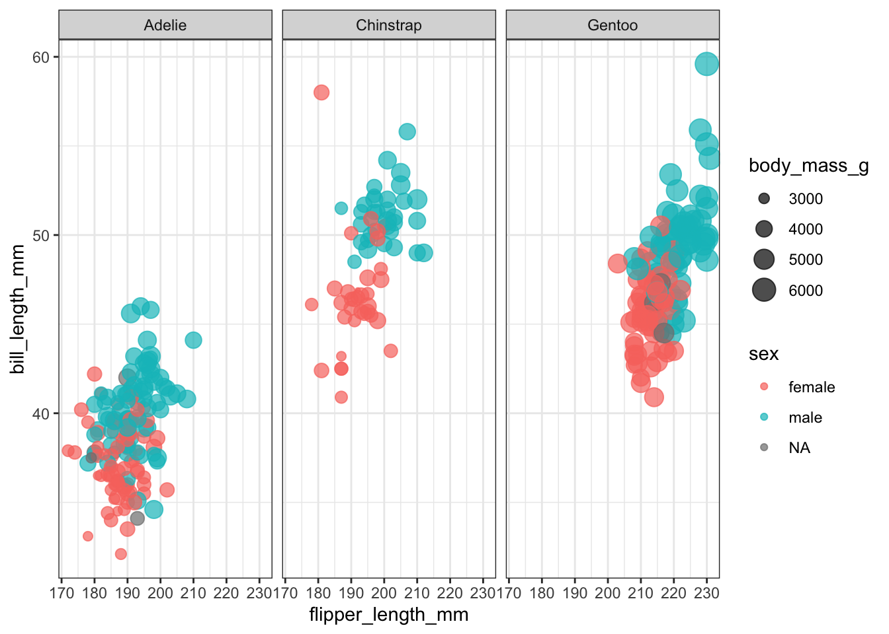
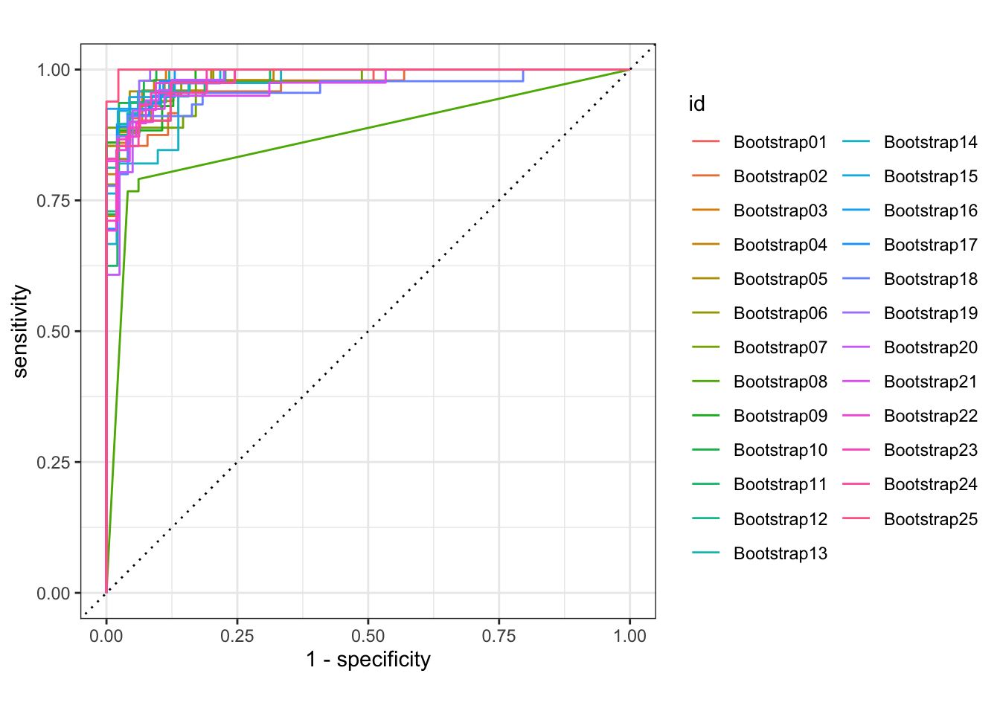

library(tidyverse)
theme_set(theme_bw())penguin Classifier
Data
library(palmerpenguins)
penguins# A tibble: 344 × 8
species island bill_length_mm bill_depth_mm flipper_length_mm body_mass_g
<fct> <fct> <dbl> <dbl> <int> <int>
1 Adelie Torgersen 39.1 18.7 181 3750
2 Adelie Torgersen 39.5 17.4 186 3800
3 Adelie Torgersen 40.3 18 195 3250
4 Adelie Torgersen NA NA NA NA
5 Adelie Torgersen 36.7 19.3 193 3450
6 Adelie Torgersen 39.3 20.6 190 3650
7 Adelie Torgersen 38.9 17.8 181 3625
8 Adelie Torgersen 39.2 19.6 195 4675
9 Adelie Torgersen 34.1 18.1 193 3475
10 Adelie Torgersen 42 20.2 190 4250
# ℹ 334 more rows
# ℹ 2 more variables: sex <fct>, year <int>Explore Data
penguins |> count(species)# A tibble: 3 × 2
species n
<fct> <int>
1 Adelie 152
2 Chinstrap 68
3 Gentoo 124penguins |> count(island)# A tibble: 3 × 2
island n
<fct> <int>
1 Biscoe 168
2 Dream 124
3 Torgersen 52penguins |>
ggplot(aes(flipper_length_mm,bill_length_mm,color=sex,size=body_mass_g))+
geom_point(alpha=0.7)+
facet_wrap(~species)
penguins_df <- penguins %>%
filter(!is.na(sex)) %>%
select(-year,-island)
penguins_df# A tibble: 333 × 6
species bill_length_mm bill_depth_mm flipper_length_mm body_mass_g sex
<fct> <dbl> <dbl> <int> <int> <fct>
1 Adelie 39.1 18.7 181 3750 male
2 Adelie 39.5 17.4 186 3800 female
3 Adelie 40.3 18 195 3250 female
4 Adelie 36.7 19.3 193 3450 female
5 Adelie 39.3 20.6 190 3650 male
6 Adelie 38.9 17.8 181 3625 female
7 Adelie 39.2 19.6 195 4675 male
8 Adelie 41.1 17.6 182 3200 female
9 Adelie 38.6 21.2 191 3800 male
10 Adelie 34.6 21.1 198 4400 male
# ℹ 323 more rowsBuild a model
library(tidymodels)
set.seed(123)
penguin_split <- initial_split(penguins_df,strata=sex)
penguin_train <- training(penguin_split)
penguin_test <- testing(penguin_split)
set.seed(234)
penguin_boot <- bootstraps(penguin_train)
penguin_boot# Bootstrap sampling
# A tibble: 25 × 2
splits id
<list> <chr>
1 <split [249/92]> Bootstrap01
2 <split [249/99]> Bootstrap02
3 <split [249/94]> Bootstrap03
4 <split [249/97]> Bootstrap04
5 <split [249/93]> Bootstrap05
6 <split [249/90]> Bootstrap06
7 <split [249/86]> Bootstrap07
8 <split [249/92]> Bootstrap08
9 <split [249/90]> Bootstrap09
10 <split [249/89]> Bootstrap10
# ℹ 15 more rowsglm_spec <- logistic_reg()%>%
set_engine("glm")
rf_spec <- rand_forest() %>%
set_mode("classification") %>%
set_engine("ranger")penguin_wf <- workflow() %>%
add_formula(sex ~ .)
penguin_wf══ Workflow ════════════════════════════════════════════════════════════════════
Preprocessor: Formula
Model: None
── Preprocessor ────────────────────────────────────────────────────────────────
sex ~ .glm_rs <- penguin_wf %>%
add_model(glm_spec) %>%
fit_resamples(
resamples = penguin_boot,
control=control_resamples(save_pred=TRUE, verbose=TRUE)
)
rf_rs <- penguin_wf %>%
add_model(rf_spec) %>%
fit_resamples(
resamples=penguin_boot,
control=control_resamples(save_pred=TRUE,verbose=TRUE)
)Evaluate modeling
collect_metrics(rf_rs)# A tibble: 3 × 6
.metric .estimator mean n std_err .config
<chr> <chr> <dbl> <int> <dbl> <chr>
1 accuracy binary 0.925 25 0.00467 Preprocessor1_Model1
2 brier_class binary 0.0604 25 0.00222 Preprocessor1_Model1
3 roc_auc binary 0.980 25 0.00188 Preprocessor1_Model1collect_metrics(glm_rs)# A tibble: 3 × 6
.metric .estimator mean n std_err .config
<chr> <chr> <dbl> <int> <dbl> <chr>
1 accuracy binary 0.917 25 0.00481 Preprocessor1_Model1
2 brier_class binary 0.0603 25 0.00388 Preprocessor1_Model1
3 roc_auc binary 0.977 25 0.00471 Preprocessor1_Model1glm_rs %>%
conf_mat_resampled()# A tibble: 4 × 3
Prediction Truth Freq
<fct> <fct> <dbl>
1 female female 40.8
2 female male 3.8
3 male female 3.76
4 male male 43.1 glm_rs %>%
collect_predictions() %>%
group_by(id) %>%
roc_curve(sex, .pred_female)%>%
autoplot()